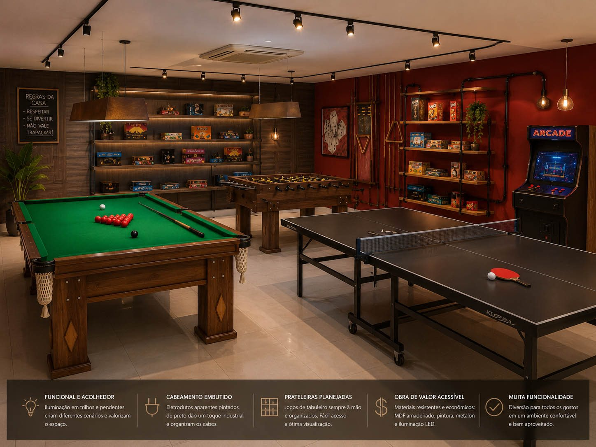
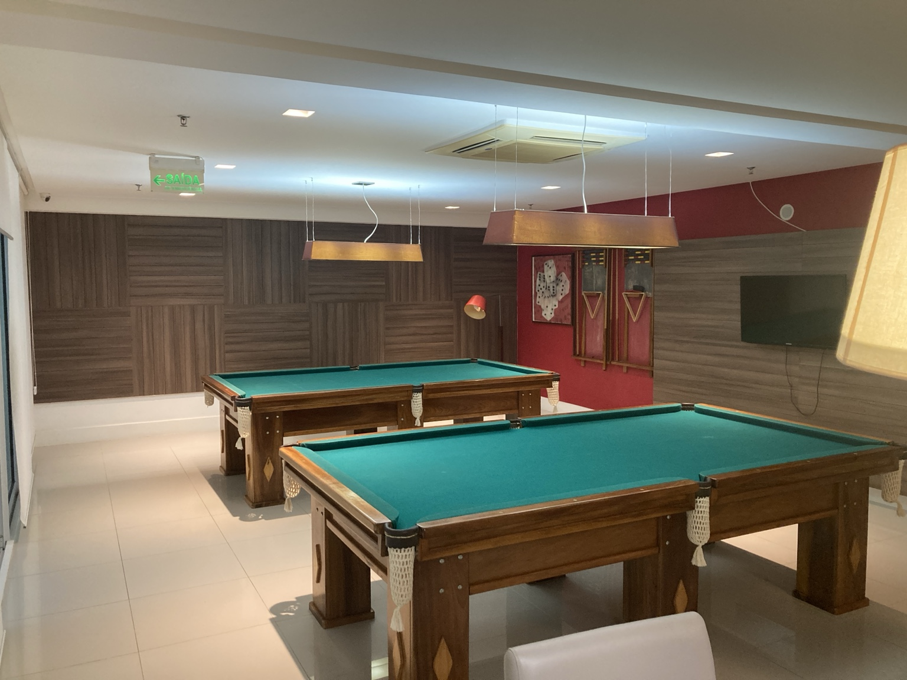

Salão de jogos
Estudo para tornar o salão de jogos mais interessante, organizado e compatível com diferentes perfis de moradores.

Proposta visual para modernização do salão de jogos.
Clique aqui para ver a imagem maior

Variação de estudo visual para organização e uso do ambiente.
Clique aqui para ver a imagem maior

Salão de jogos: mais diversidade, menos repetição
O salão de jogos já possui uma base interessante, mas hoje sua composição é limitada: duas mesas de bilhar ocupam praticamente todo o protagonismo do ambiente e reduzem a diversidade de uso do espaço. Isso faz com que a sala atenda bem a um tipo específico de lazer, mas deixe de conversar com outros perfis de moradores.
Uma alternativa mais inteligente seria manter apenas uma mesa de bilhar e abrir espaço para novas experiências: uma mesa de ping-pong, um totó, jogos de tabuleiro, cartas, xadrez, dominó e outras opções simples, acessíveis e de uso intergeracional.
Também faria muito sentido estudar a inclusão de um arcade retrô. Esse tipo de equipamento tem forte apelo afetivo para adultos que cresceram jogando e, ao mesmo tempo, desperta curiosidade nas novas gerações. É uma solução relativamente simples, divertida e com bom potencial de uso, desde que escolhida com critério e manutenção viável.
A melhoria não precisa ser cara. Com pintura mais interessante, iluminação melhor dosada, prateleiras bem organizadas, jogos expostos de forma bonita e uma composição visual mais criativa, o salão pode deixar de parecer apenas uma sala com mesas de bilhar e passar a funcionar como um verdadeiro ambiente de convivência.
A proposta é transformar o espaço com simplicidade e inteligência, criando uma sala mais viva, mais versátil e mais democrática — útil para adultos, adolescentes e crianças. Em vez de um uso repetitivo, o condomínio ganha diversidade de entretenimento e uma área comum com mais personalidade.